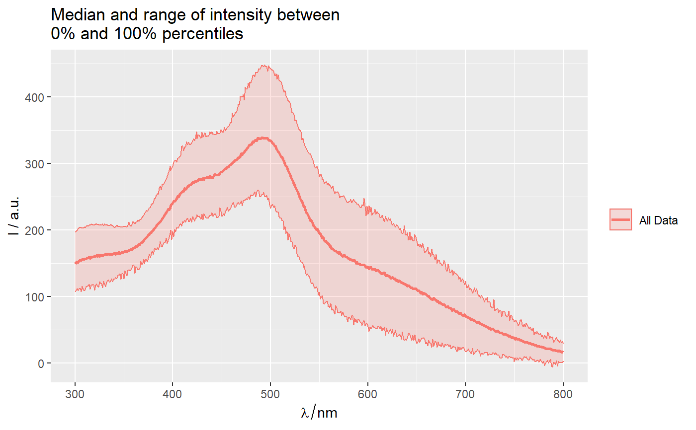
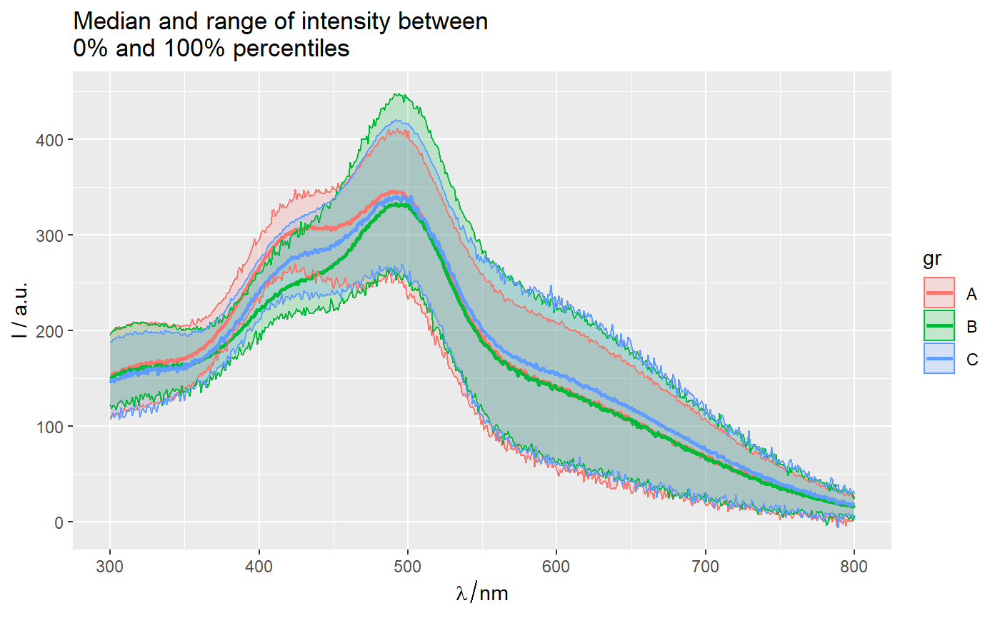
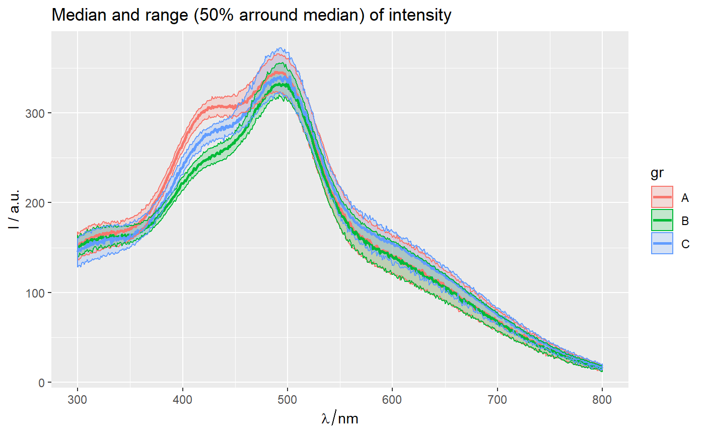
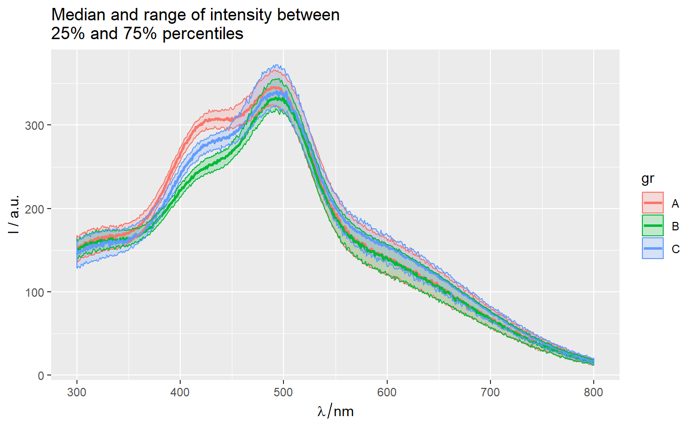

qplot_spRangeMedian.RdPlot range of y axis values (usually intensities) of spectroscopic data
between selected percentilles.
Function qplot_spRange() returns whole ggplot and
function layer_spRange() returns a layer which can be added to a ggplot.
qplot_spRangeMedian( sp, by = NULL, percent = NULL, probs = NULL, palette = hyGet_palette(sp), ..., lwd_median = 1, legend_title = by, alpha = 0.2, add = FALSE, name_if_by_is_NULL = "All Data" )
| sp |
|
|---|---|
| by | A vector (factor variable) with indicated groups for each case:
either variable name inside the object |
| percent | Numeric value between 0 and 100 that indicates percentage of samples nearest to median be plotted as a ribbon. |
| probs | verctor of size 2 with values between 0 and 1 that indicates probabilities at which percentiles should be plotted. |
| ... | further arguments to |
| legend_title | (character|NULL) The title for legend. |
| alpha | (numeric from 0 to 1) transperency. |
| add | (logical) add plot to an existing ggplot object? |
A ggplot object.
More details in package ggplot2.
Other spHelper plots:
check_palette(),
layer_spRangeMean(),
plot_colors(),
plot_hyPalette(),
plot_spCompare(),
plot_spDiff(),
plot_spDistribution(),
qplot_confusion(),
qplot_crosstab(),
qplot_infoDim(),
qplot_kAmp(),
qplot_kSp(),
qplot_prediction(),
qplot_spRangeCenter(),
qplot_spStat(),
qplot_spc(),
rmExpr(),
rm_stripes(),
stat_chull()
qplot_spRangeMedian(Spectra2, "gr")# Both lines below gives identical plots with different default titles: qplot_spRangeMedian(Spectra2, "gr", percent = 50)#> Error in simsalapar::expr2latex(expr): is not language nor symbol), but length(.) = 4 != 1